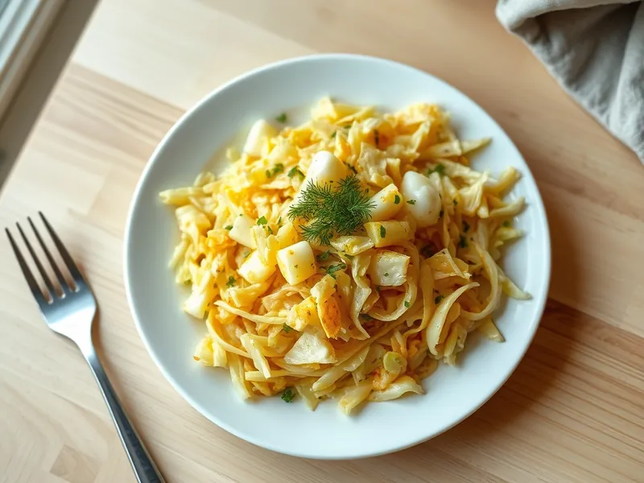

Жареная капуста с яйцом
Дешёвый советский ужин: капуста, обжаренная с луком до румяности и перемешанная с яйцами
25 мин2 порц.402 ккал на порциюБ 17 · Ж 29 · У 20Русская кухня
Открыть в приложении: порции, таймеры, список покупок
Продукты на 2 порц.
- Капуста белокочанная600 г
- Лук репчатый1 шт
- Яйцо куриное3 шт
- Растительное масло2 ст. л.
- Сливочное масло10 г
- Соль1 щеп.
- Перец чёрный молотый1 щеп.
- Укроп по желаниюпо вкусу
Как готовить
- Тонко нашинкуйте капусту, лук нарежьте полукольцами. На это уйдёт 5 минут.
- Разогрейте масло на среднем огне, обжарьте лук 3 минуты, добавьте капусту и сливочное масло.
- Жарьте капусту 10-12 минут, часто перемешивая, пока она не станет мягкой и местами золотисто-коричневой. Если начинает пригорать, добавьте 2 столовые ложки воды и накройте на 2 минуты.
- Посолите и поперчите. Взбейте яйца вилкой и влейте в капусту.
- Перемешивайте 2-3 минуты на среднем огне, пока яйца не схватятся мягкими кусочками. Посыпьте укропом.
Совет. Солите капусту в конце жарки: соль сразу выгоняет сок, и капуста тушится вместо того, чтобы подрумяниться.